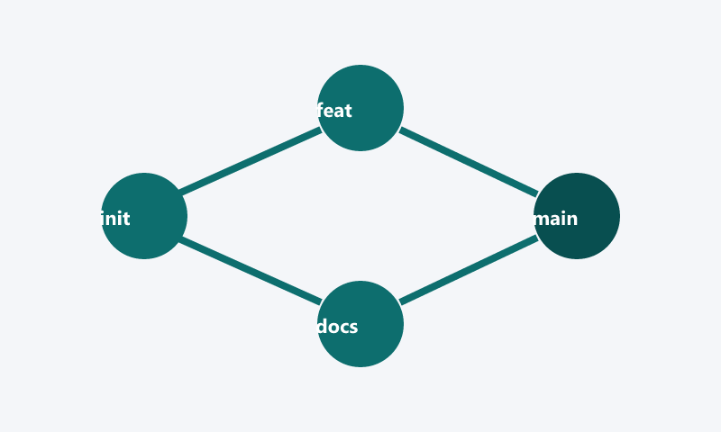
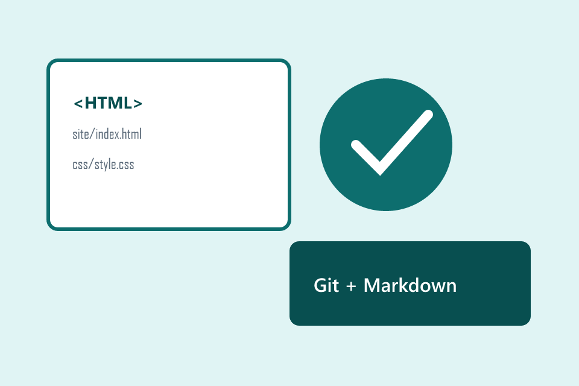
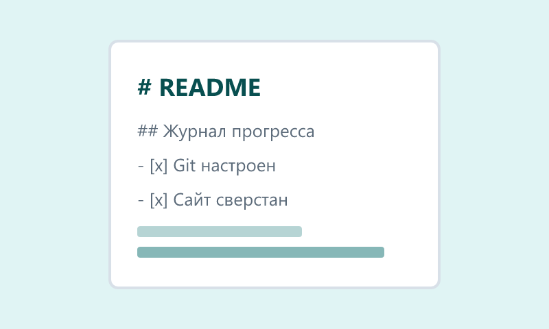
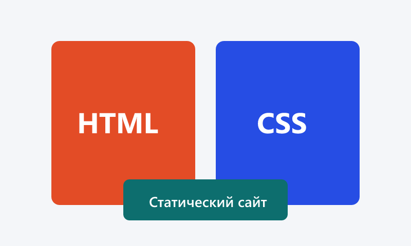
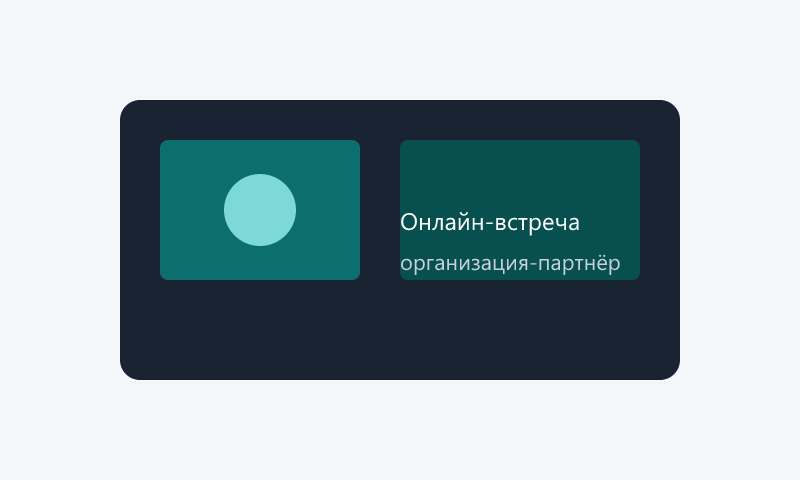
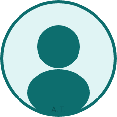
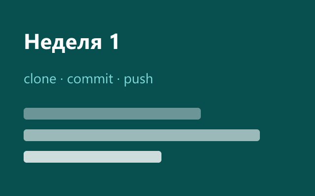
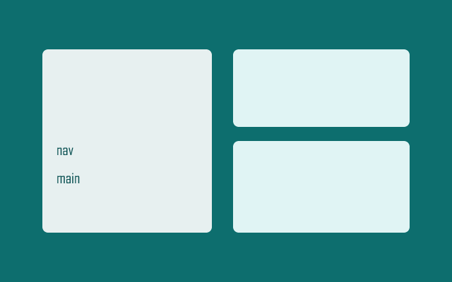
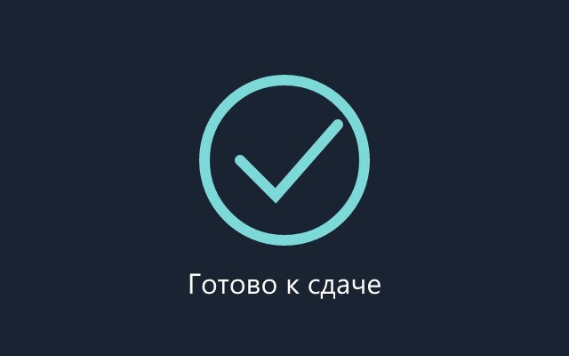

Управление версиями
Клонирование, коммиты, ветки и осмысленные сообщения к изменениям в репозитории.
Учебный проект по освоению Git, оформлению документации в Markdown и созданию статического веб-сайта о ходе практики. Сайт фиксирует цели, участников, журнал работ и полезные материалы.
О проекте Журнал прогресса
В рамках проектной практики студент выполняет базовую часть задания: настраивает репозиторий, готовит материалы в Markdown, разрабатывает статический сайт, взаимодействует с организацией-партнёром и формирует отчёт. Данный ресурс — публичное представление этой работы.

Клонирование, коммиты, ветки и осмысленные сообщения к изменениям в репозитории.

README, журнал прогресса и отчёты оформляются в формате Markdown.

Разделы на одной странице HTML; оформление — в файле css/style.css.
Проектная (учебная) практика — обязательная часть подготовки по направлениям ИТ и информационной безопасности. В фокусе — навыки документирования и публикации результатов.
Создать учебный репозиторий и статический сайт, отражающий выполнение базовой части задания на проектную практику: работа с Git, Markdown, HTML/CSS, взаимодействие с организацией-партнёром и подготовка отчёта.
reports.Все материалы проекта хранятся в репозитории в формате Markdown: описание, ход работ, отчёт о взаимодействии с партнёром.
Один HTML-файл с разделами, иллюстрациями и встроенным видео.
Стили вынесены в site/css/style.css.

Взаимодействие организуется через куратора проектной деятельности и ответственного по практике (онлайн-встреча, экскурсия или стажировка).
Краткий отчёт о встрече с представителем IT-профильной организации размещён в репозитории: файл docs/partner_report.md. В отчёте описаны цели встречи, полученные знания и связь с темой практики.
Практика выполняется индивидуально. Ниже — роль и личный вклад участника в проект по дисциплине «Проектная деятельность» в рамках учебной практики.

Участник 1 · группа 251-332
Координирует выполнение базовой части задания и ведение репозитория.
site/css/style.css.site/images/.Git, структура репозитория, HTML/CSS, публикация сайта из папки site/.
Markdown-файлы, отчёт о партнёре, подготовка DOCX/PDF для папки reports.
Связь с куратором и ответственным по практике, фиксация мероприятий в журнале.
Хроника основных этапов проектной (учебной) практики с февраля по май 2026 года.

Создан репозиторий по шаблону практики, выполнено клонирование на локальную
машину. Освоены команды status, add, commit,
push и создание ветки для черновиков сайта. Согласованы правила
сообщений к коммитам на русском и английском языках.

Подготовлен README с таблицей участников и периодом практики. Начата
вёрстка разделов в index.html. Добавлены PNG-иллюстрации
в site/images/. Оформлен черновик отчёта о встрече с
организацией-партнёром.
Проведена видеоконференция с IT-отделом партнёрской организации по
согласованию с куратором. Обсуждены требования к документации в Git,
публикация статических страниц и участие в профильном митапе. Материалы
внесены в docs/partner_report.md.

Завершены все разделы сайта, добавлены ресурсы и видео. Проверена
адаптивная вёрстка в браузере. Подготовлены файлы отчёта для загрузки
в СДО (DOCX и PDF в папке reports).
Материалы, которые помогли выполнить базовую часть проектной практики: Git, Markdown, вёрстка и отчётность.
Краткий обзор основ HTML для начинающих (использован при вёрстке сайта):